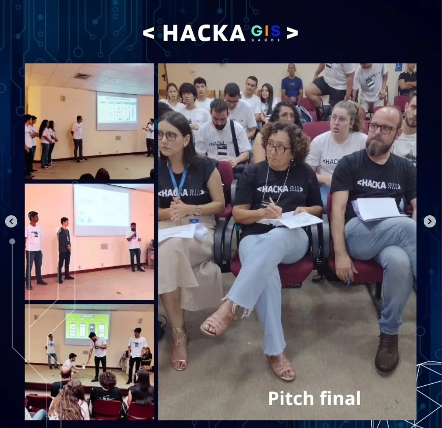
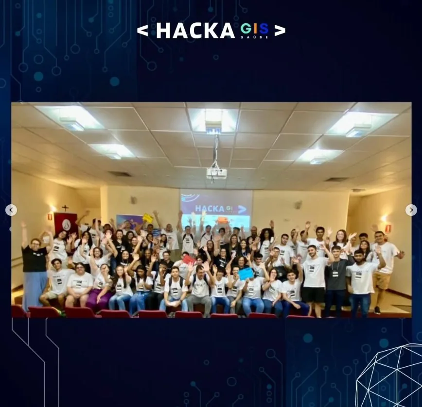

HACKAGIS SAÚDE 2023:
TECNOLOGIA PARA A
TERCEIRA IDADE
A participação de Wanessa Karoline, Valdivino Junior e Gabriel Meireles em um desafio de inovação voltado à inclusão digital de pessoas idosas.

Engenharia para um problema humano
O primeiro HackaGIS Saúde de Uberaba foi um desafio de empreendedorismo e inovação que testou os limites da nossa equipe. Diferente de uma competição de robótica tradicional, um hackathon exige que os participantes criem uma solução tecnológica completa para um problema real em um curto espaço de tempo.
O objetivo era criar tecnologias inclusivas para a terceira idade. Percebemos que o maior obstáculo para os idosos não é o celular em si, mas a complexidade da navegação.
Tecnologia que aproxima as pessoas
O desafio colocou a inclusão digital da terceira idade no centro da criação de soluções. Além do desenvolvimento técnico, a experiência exigiu que as equipes pensassem na compreensão, no uso e na apresentação de suas propostas.
O evento ocorreu em 20 e 21 de outubro de 2023, na Uniube, em Uberaba, reunindo participantes em atividades de mentoria e apresentação de projetos.
Contexto e classificação: registro oficial do Parque Tecnológico de Uberaba.

Pitch final
Equipe e participantesO que essa conquista deixou para o GAIA
Esta conquista em outubro de 2023 foi um marco para os membros fundadores do GAIA Robótica. Mostrou que a nossa engenharia não serve apenas para construir máquinas, mas para resolver problemas humanos complexos.
A dedicação e o trabalho sob pressão demonstrados no HackaGIS são os mesmos pilares que hoje sustentam os nossos projetos de drones e robótica autônoma.
Sua empresa pode fazer parte do próximo pódio
Apoie a engenharia do Triângulo Mineiro e ajude o GAIA a transformar boas ideias em projetos com impacto real.
Seja patrocinador →